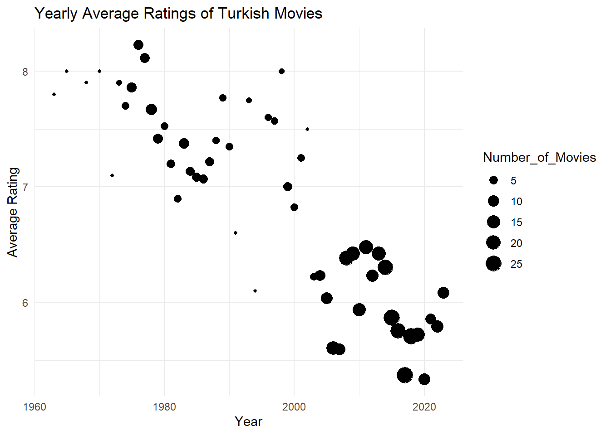
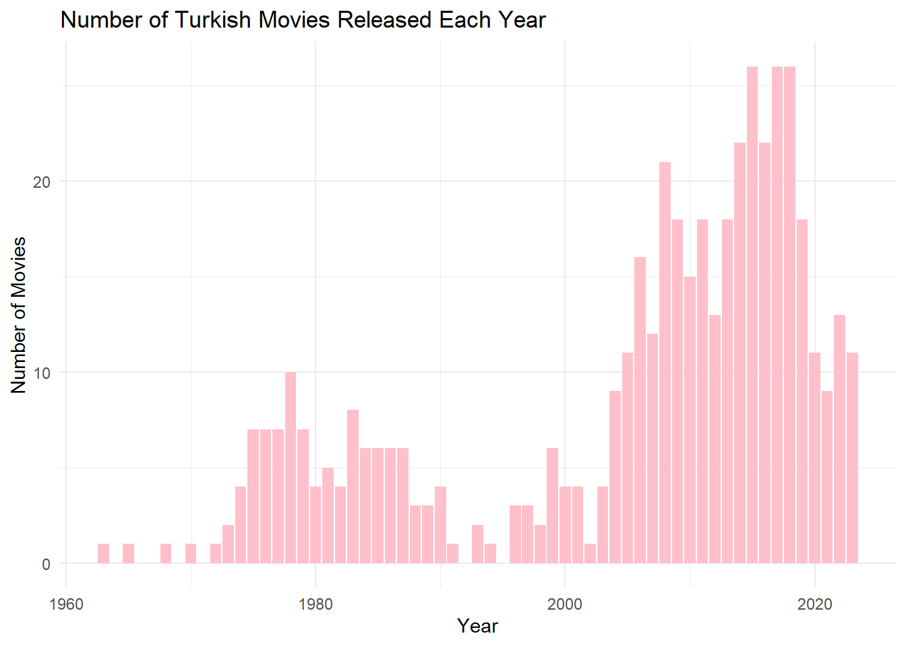
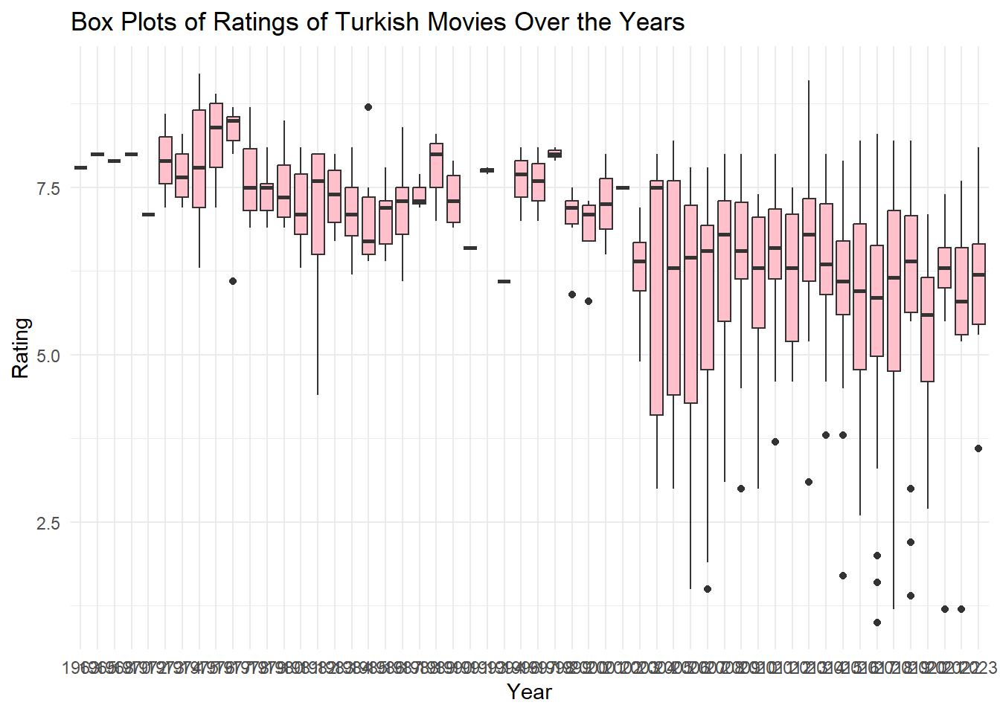

Using the filters on https://m.imdb.com/search, list all Turkish movies with more than 2500 reviews, and save the URLs.
The Title Type should be “Movie” only, the Country should be “Turkey” with the option “Search country of origin only” active, and the Number of Votes should be a minimum “2500”. You should be able to find 469 movies in total.
Add “&count=250” to the end of your search URL. This will increase the list to 250 movies. Unfortunately, 250 is the maximum parameter that can be defined for the count.
We can complete our search by using partial searches with the “Release Date” filter of IMDb. Find 2 different URLs that are limited to 2010-2023, and before 2010 (use the release data filter as 01/01/2010-31/12/2023 and …….- 31/12/2009.)
Create a vector that will contain the 2 URLs you obtained from the above searches. In the next web scrapping phase, you will be looping over these 2 URLs to scrap their data and collect them in a single data frame.
library(tidyverse)
Warning: package 'tidyverse' was built under R version 4.3.2
Warning: package 'ggplot2' was built under R version 4.3.2
Warning: package 'tidyr' was built under R version 4.3.2
Warning: package 'readr' was built under R version 4.3.2
Warning: package 'purrr' was built under R version 4.3.2
Warning: package 'dplyr' was built under R version 4.3.2
Warning: package 'stringr' was built under R version 4.3.2
Warning: package 'forcats' was built under R version 4.3.2
Warning: package 'lubridate' was built under R version 4.3.2
── Attaching core tidyverse packages ──────────────────────── tidyverse 2.0.0 ──
✔ dplyr 1.1.4 ✔ readr 2.1.4
✔ forcats 1.0.0 ✔ stringr 1.5.1
✔ ggplot2 3.4.4 ✔ tibble 3.2.1
✔ lubridate 1.9.3 ✔ tidyr 1.3.0
✔ purrr 1.0.2
── Conflicts ────────────────────────────────────────── tidyverse_conflicts() ──
✖ dplyr::filter() masks stats::filter()
✖ dplyr::lag() masks stats::lag()
ℹ Use the conflicted package (<http://conflicted.r-lib.org/>) to force all conflicts to become errors
library(stringr)library(rvest)
Warning: package 'rvest' was built under R version 4.3.2
Attaching package: 'rvest'
The following object is masked from 'package:readr':
guess_encoding
Start web scrapping to create a Data Frame with columns: Title, Year, Duration, Rating, Votes
library(tidyverse)library(stringr)library(rvest)library(ggplot2)# IMDb URLs for movies between 2010-2023 and before 2010url_btw_2010_2023 <-"https://www.imdb.com/search/title/?title_type=feature&release_date=2010-01-01,2023-12-31&num_votes=2500,&country_of_origin=TR&count=250"url_before_2010 <-"https://www.imdb.com/search/title/?title_type=feature&release_date=,2009-12-31&num_votes=2500,&country_of_origin=TR&count=250"# Combine the URLs into a vectorurl_vector <-c(url_btw_2010_2023, url_before_2010)# Create empty vectors to store movie detailsTitle <-c()Year <-c()Duration <-c()Rating <-c()Votes <-c() # Corrected variable name# Loop through each URL and scrape data & read HTML content of the IMDb websitefor (url in url_vector) { website <-read_html(url)# Extract movie Title title_names <- website %>%html_nodes('.ipc-title__text') %>%html_text() title_names <-tail(head(title_names, -1), -1) title_names <-str_split(title_names, " ", n =2) title_names <-unlist(lapply(title_names, function(x) x[2]))# Extract release year year <- website %>%html_nodes(".sc-43986a27-7.dBkaPT.dli-title-metadata") %>%html_text() %>%substr(1, 4) %>%as.numeric()# Extract movie rating rating <- website %>%html_nodes(".ipc-rating-star.ipc-rating-star--base.ipc-rating-star--imdb.ratingGroup--imdb-rating") %>%html_text() %>%substr(1, 3) %>%as.numeric()# Extract number of votes vote <- website %>%html_node(".sc-53c98e73-0.kRnqtn") %>%html_text() %>%parse_number()# Extract number of duration duration <- website %>%html_nodes(".sc-1b7x5y9-6.gwfzJB.dli-watch-bar") %>%html_text() %>%str_extract_all("\\d+") %>%lapply(function(x) as.numeric(x)) %>%unlist() %>%sum()# Append data to vectors Title <-append(Title, title_names) Year <-append(Year, year) Rating <-append(Rating, rating) Votes <-append(Votes, vote) # Corrected variable name Duration <-append(Duration, duration)}# Create a data frame from the scraped datamovies <-data.frame(Title, Year, Duration, Rating, Votes)# Show the first few rows of the data framecat("First few rows of the 'movies' data frame:\n")
First few rows of the 'movies' data frame:
print(head(movies))
Title Year Duration Rating Votes
1 Kuru Otlar Üstüne 2023 0 8.1 5037
2 Istanbul Için Son Çagri 2023 0 5.3 35006
3 Yedinci Kogustaki Mucize 2019 0 8.2 5037
4 Ölümlü Dünya 2 2023 0 7.5 35006
5 Bihter 2023 0 3.6 5037
6 Ölümlü Dünya 2018 0 7.6 35006
Conduct an Exploratory Data Analysis on your data set, create visualizations to address the following questions, and provide insightful facts about the Turkish movie industry. The questions below will guide your analysis, but you are not restricted to them. Any additional insights will be a bonus.
a) Arrange your data frame in descending order by Rating. Present the top 5 and bottom 5 movies based on user ratings. Have you watched any of these movies? Do you agree or disagree with their current IMDb Ratings?
# Arrange the data frame in descending order by Ratingmovies <- movies[order(movies$Rating, decreasing =TRUE),]# Top 5 and bottom 5 movies based on user ratingstop5_movies <-head(movies, 5)bottom5_movies <-tail(movies, 5)# Print top and bottom moviescat("Top 5 Movies:\n")
Title Year Duration Rating Votes
189 Cumali Ceber 2 2018 0 1.2 5037
199 Müjde 2022 0 1.2 5037
245 15/07 Safak Vakti 2021 0 1.2 5037
101 Cumali Ceber: Allah Seni Alsin 2017 0 1.0 5037
150 Reis 2017 0 1.0 35006
Even though I have great interest and respect for Kemal Sunal’s works, I think there are better films that can be found in the top 5. When I look at the last 5, I have no idea because they are movies I haven’t watched.
Check the ratings of 2-3 of your favorite movies. What are their standings?
# My favorite moviesfavorite_movies <-c("Hukumet Kadin","CM101MMXI Fundamentals","Olumlu Dunya 2") # Check the ratings of my favorite moviesratings_of_favorite_movies <- movies[(movies$Title %in% favorite_movies), c("Title", "Rating")]# Arrange the data frame in descending order by Ratingratings_of_favorite_movies <- ratings_of_favorite_movies[order(ratings_of_favorite_movies$Rating, decreasing =TRUE), ]# Print standings of my favorite moviescat("Standings of My Favorite Movies:\n")
Standings of My Favorite Movies:
print(ratings_of_favorite_movies)
Title Rating
39 CM101MMXI Fundamentals 9.1
Considering that audience rating is a crucial indicator of movie quality, what can you infer about the average ratings of Turkish movies over the years? Calculate yearly rating averages and plot them as a scatter plot. Hint: Use functions like group_by(), summarise(), mean(), ggplot(), geom_point(). Similarly, plot the number of movies over the years. You might observe that using yearly averages could be misleading due to the increasing number of movies each year. As an alternative solution, plot box plots of ratings over the years (each year having a box plot showing statistics about the ratings of movies in that year). What insights do you gather from the box plot?
# Assuming 'movies' data frame is available with columns: Title, Year, Rating, Votes# Load required librarieslibrary(tidyverse)library(ggplot2)# Calculate yearly rating averagesaverage_ratings <- movies %>%group_by(Year) %>%summarise(Average_Rating =mean(Rating),Number_of_Movies =n())# Scatter plot for yearly rating averagesggplot(average_ratings, aes(x = Year, y = Average_Rating, size = Number_of_Movies)) +geom_point() +labs(title ="Yearly Average Ratings of Turkish Movies",x ="Year",y ="Average Rating") +theme_minimal()

# Number of movies over the yearsggplot(average_ratings, aes(x = Year, y = Number_of_Movies)) +geom_bar(stat ="identity", fill ="pink") +labs(title ="Number of Turkish Movies Released Each Year",x ="Year",y ="Number of Movies") +theme_minimal()

# Box plots of ratings over the yearsggplot(movies, aes(x =as.factor(Year), y = Rating)) +geom_boxplot(fill ="pink") +labs(title ="Box Plots of Ratings of Turkish Movies Over the Years",x ="Year",y ="Rating") +theme_minimal()

Do you believe there is a relationship between the number of votes a movie received and its rating? Investigate the correlation between Votes and Ratings.
# Assuming 'movies' is your data frame with columns: Title, Year, Duration, Rating, Votes, Rank# Calculate correlation coefficient between Votes and Ratingscorr_votes_rating <-cor(movies$Votes, movies$Rating)# Print the correlation coefficientcat("Correlation Coefficient between Votes and Ratings:", corr_votes_rating, "\n")
Correlation Coefficient between Votes and Ratings: 0.0332948
Do you believe there is a relationship between a movie’s duration and its rating? Investigate the correlation between Duration and Ratings.
# Assuming 'movies' is your data frame with columns: Title, Year, Duration, Rating, Votes, Rank# Calculate correlation coefficient between Duration and Ratingscorr_duration_rating <-cor(na.omit(movies$Duration), na.omit(movies$Rating))
Warning in cor(na.omit(movies$Duration), na.omit(movies$Rating)): the standard
deviation is zero
# Print the correlation coefficientcat("Correlation Coefficient between Duration and Ratings:", corr_duration_rating, "\n")
Correlation Coefficient between Duration and Ratings: NA
As standard deviation is zero, we can say there is no relationship between duration and rating.
Repeat steps 1 and 2 for a different advanced IMDb search. This time, find Turkish movies that are in the top 1000 movies on IMDb. Perform similar scraping to create another Data Frame with only the columns: Title, Year.
library(tidyverse)library(stringr)library(rvest)library(ggplot2)# IMDb URL for Top1000url_top_1000 <-"https://www.imdb.com/search/title/?title_type=feature&sort=num_votes,desc&groups=top_1000&country_of_origin=TR"# Create empty vectors to store movie detailsTitle <-c()Year <-c()# Loop through each URL and scrape data & read HTML content of the IMDb websitefor(url in url_top_1000){ website =read_html(url)# Extract movie Title title_names <- website %>%html_nodes('.ipc-title__text') title_names <-html_text(title_names) title_names <-tail(head(title_names,-1),-1) title_names <-str_split(title_names, " ", n=2) title_names <-unlist(lapply(title_names, function(x) {x[2]}))# Extract release year year <- website %>%html_nodes(".sc-43986a27-7.dBkaPT.dli-title-metadata") year <-html_text(year) year <-substr(year, 1, 4) year <-as.numeric(year)# Append data to vectors Title <-append(Title,title_names) Year <-append(Year, year)}# Create a data frame from the scraped datamovies_top_1000_turkish <-data.frame(Title, Year)# Show the first few rows of the data frame cat("First few rows of the 'movies' data frame:\n")
First few rows of the 'movies' data frame:
print(head(movies_top_1000_turkish))
Title Year
1 Babam ve Oglum 2005
2 Eskiya 1996
3 G.O.R.A. 2004
4 Kis Uykusu 2014
5 Yedinci Kogustaki Mucize 2019
6 Bir Zamanlar Anadolu'da 2011
# Assuming 'movies_top_1000_turkish' and 'movies' have columns: "Title", "Year", "Duration", "Rating", "Votes"Sys.setlocale("LC_ALL", "en_US.UTF-8")
# Merge based on "Title" and "Year"top1000_merged <-merge(movies_top_1000_turkish, movies, by =c("Title", "Year"), all.x =TRUE)# Display the merged data frameprint(top1000_merged)
Title Year Duration Rating Votes
1 Ahlat Agaci 2018 0 8.0 35006
2 Ayla: The Daughter of War 2017 0 8.3 35006
3 Babam ve Oglum 2005 0 8.2 35006
4 Bir Zamanlar Anadolu'da 2011 0 7.8 5037
5 Eskiya 1996 0 8.1 35006
6 G.O.R.A. 2004 0 8.0 35006
7 Her Sey Çok Güzel Olacak 1998 0 8.1 35006
8 Kis Uykusu 2014 0 8.0 5037
9 Nefes: Vatan Sagolsun 2009 0 8.0 5037
10 Vizontele 2001 0 8.0 5037
11 Yedinci Kogustaki Mucize 2019 0 8.2 5037